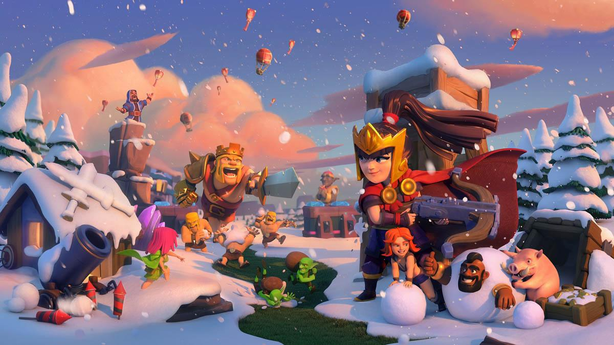

Becoming a gamer is not easy, especially if you aim to succeed professionally or stand out in the gaming community.
It requires intense dedication, consistent practice, and the ability to handle tough competition,
as millions of players worldwide are constantly trying to improve and rise in ranks. Mastering a game takes hundreds or even thousands of hours of gameplay,
learning strategies, improving reflexes, and understanding every detail of the game. Simply having good skills is not enough—you also need mental strength,
focus, quick thinking, and, in many cases, teamwork and communication.
For those who want to stream or create content, there's an added challenge of learning video editing, managing social media, building a personal brand,
and maintaining audience engagement, all of which can take months or even years to grow.Financially, the gaming career path is unstable, with many struggling to earn steady income through tournaments,
sponsorships, or content platforms.
Long hours in front of a screen can also affect physical and mental health, causing strain, stress, and burnout. Furthermore, games constantly evolve with new updates and changes,
so staying at the top means continuous learning and adaptation. In short, becoming a gamer is far more than just playing for fun—it’s a serious journey that requires passion,
hard work, and patience.
🎮 1. Intense Competition:-
Millions of players around the world are trying to stand out.
Only a small percentage of gamers reach the top ranks in esports, streaming, or content creation.
🕒 2. Takes a Lot of Time:-
To master a game, players need to spend hundreds or thousands of hours practicing.
You have to learn mechanics, strategies, map knowledge, and keep improving daily.
💻 3. Skill is Not Enough:-
Being good at a game is just one part.
You also need mental strength, quick decision-making, teamwork (for team games), and sometimes even leadership.
🎥 4. If You Want to Stream or Create Content:-
You must learn video editing, live streaming tools, social media, and build a unique personal brand.
It can take months or years to grow an audience
💰 5. It’s Not Always a Stable Career:-
Earning money from gaming is unpredictable.
You might not get sponsors, views, or tournament wins regularly.
Many gamers need to do side jobs until they’re financially stable.
🧠 6. Mental & Physical Health Matters:-
Long hours of gaming can affect eyes, posture, and sleep.
There's also stress, burnout, and pressure to perform—just like in sports.
🧩 7. Constant Learning & Adaptation
Games keep updating: new patches, new characters, new rules.
You must keep learning and adapting—never stop improving
Clash of Clans

Clash of Clans (CoC) is a popular online multiplayer strategy game developed by Supercell, a Finnish game company. It’s available for free on Android and iOS platforms.
🛡️ What is Clash of Clans?
Clash of Clans is a base-building and war strategy game where players build their own village, train troops, and attack other players to earn resources like gold, elixir, and dark elixir
⚔️ Gameplay Feature :-
🏘️ Base Building:
Build and upgrade defenses (like cannons, archer towers, and walls).
Upgrade resource collectors (like gold mines and elixir collectors).
Upgrade your Town Hall to unlock new buildings and troops.
🪖 Army and Attacks:
Train a variety of troops (barbarians, archers, wizards, dragons, etc.).
Use spells like heal, rage, freeze, and invisibility.
Attack other players to loot resources and gain trophies.
🏹 Defending Your Base:
Design your base layout smartly to protect against enemy attacks.
Upgrade traps, heroes, and defenses for stronger protection
GTA (short for Grand Theft Auto) is one of the most famous and influential video game series in the world, developed by Rockstar Games
🚗 What is GTA?
GTA is an open-world action-adventure game series where players can explore large cities, complete missions, drive vehicles, fight enemies, and live a virtual criminal life.
🌍 GTA Online:
Launched with GTA V, GTA Online is the multiplayer version.
Create your own character, build a criminal empire, buy properties, do heists with friends, or just roam free.
Continues to get frequent updates with new missions, vehicles, and businesses.
🚨 Upcoming Game:
GTA VI has been officially announced and is expected to release in 2025, featuring a return to Vice City with two main characters and even more realistic gameplay.
🔥 Why is GTA So Popular?
Huge open world with limitless freedom
Engaging and often humorous storylines
High-quality graphics and voice acting
Real-life city vibes and details
Active online community and modding support (especially on PC)